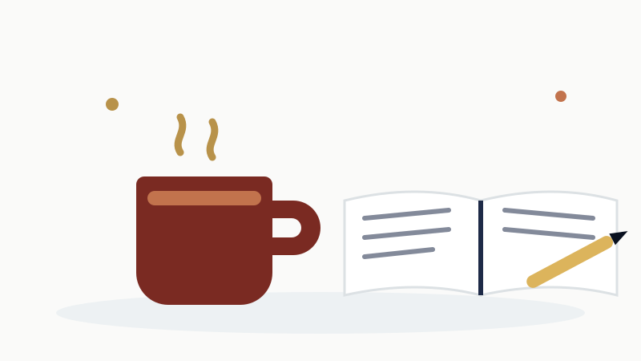

Encouragement
Joy Is Fuel, Not a Reward
Somewhere along the way, a lot of students picked up a quiet rule: if it feels good, it doesn't count.
Serious classes require suffering. Rest has to be earned. A break is what you get after the work is done, and since the work is never done, the break never comes. And joy, actual enjoyment of your own life, gets postponed to some future date after graduation, after the program, after boards.
I want to push back on that rule, as your professor and as someone who studies the organ you are running on.
Breaks are when learning finishes
Your brain does not file memories while you are cramming. It files them afterward, during rest, and especially during sleep. That is when the things you retrieved today get consolidated into things you still know next week.
So hour four of a grinding, exhausted study session is not heroic. It is donating your time to nobody. You are shoveling material toward a filing system that has already gone home for the night.
The break is not time away from the learning. The break is when the learning gets saved.
Take real ones. Stand up, go outside, eat actual food, sleep an actual night. Schedule breaks the way you schedule study, on purpose, and stop while you are still winning instead of grinding until you collapse. Stopping at your best moment is also better for tomorrow's motivation. You come back to a win, not to a wall.
Joy is a renewable fuel
Here is the longer game. Most of you are headed for careers measured in decades. If the only fuel you know how to run on is fear and deadline panic, you will get through this semester, maybe the next one, and then you will hit a wall with a name I would rather you never meet.
Joy is the fuel that renews. So protect the parts of this that you actually like. The weird facts you tell people at dinner. The moment the reveal box proves you right. The day your team finally gets the hard one. Teaching something to a classmate and watching it land. Those are not distractions from the serious work. They are the reason people survive the serious work.
And keep one thing in your week that is purely yours. The gym, the garden, the bad TV show, the pickup game, the nap. Not negotiable, not apologized for.
Work hard. Then stop, on purpose, and let it count.